Equipment
Before leaving Sommerlund on your quest for the Lorestone of Varetta, you equip yourself with a map of the Stornlands and a pouch of gold. To find out how much gold is in the pouch, pick a number from the Random Number Table. Add 10 to the number you have picked. The total equals the number of Gold Crowns inside the pouch, and you should now enter this number in the ‘Gold Crowns’ section of your Action Chart. If you have successfully completed books 1–5 of the Lone Wolf adventures in the earlier series, you may add this sum to the total of any Crowns you already possess. You can only carry a maximum of fifty Crowns, but any over this number can be left in safekeeping at your Kai Monastery.
You can take five items from the list below, again adding to these, if necessary, any you may already possess. However, remember you can only carry two Weapons and eight Backpack Items, maximum.
- Sword (Weapons)
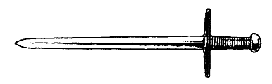
- Potion of Laumspur (Backpack Items) This potion restores 4 ENDURANCE points to your total when swallowed after combat. There is enough for only one dose.
- Warhammer (Weapons)
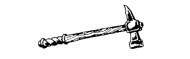
- Bow (Weapons)
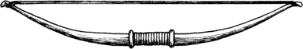
- Quiver (Special Items) This contains six Arrows. Tick them off as they are used.
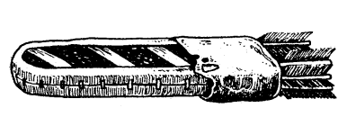
- 4 Special Rations (Meals) Each of these counts as one Meal, and each takes up one space in your Backpack.
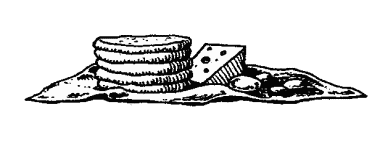
- Quarterstaff (Weapons)
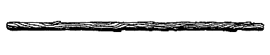
- Padded Leather Waistcoat (Special Item) This adds 2 ENDURANCE points to your total.
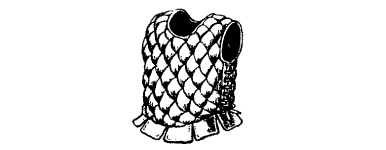
- Rope (Backpack Items)
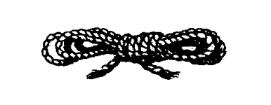
- Dagger (Weapons)
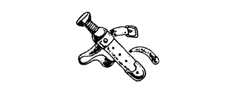
- Tinderbox (Backpack Items)
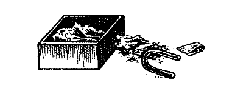
- Axe (Weapons)
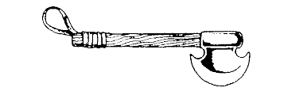
{kind=link}
{kind=link}
{kind=link}
{kind=link}
{kind=link}
{kind=link}
{kind=link}
{kind=link}
{kind=link}
{kind=link}
{kind=link}
{kind=link}
List the five items that you choose on your Action Chart, under the heading given in brackets, and make a note of any effect they may have on your ENDURANCE points or COMBAT SKILL.
How to Carry Equipment
Now that you have your equipment, the following list shows you how it is carried. You do not need to make notes, but you should refer back to this list in the course of your adventure.
- Sword—carried in the hand.
- Potion of Laumspur—carried in the Backpack.
- Warhammer—carried in the hand.
- Bow—carried in the hand.
- Quiver—slung over your shoulder.
- Special Rations—carried in the Backpack.
- Quarterstaff—carried in the hand.
- Padded Leather Waistcoat—worn on the body.
- Rope—carried in the Backpack.
- Dagger—carried in the hand.
- Tinderbox—carried in the Backpack.
- Axe—carried in the hand.
How Much Can You Carry?
- Weapons
- The maximum number of Weapons that you may carry is two.
- Backpack Items
- These must be stored in your Backpack. Because space is limited, you may keep a maximum of only eight articles, including Meals, in your Backpack at any one time.
- Special Items
- Special Items are not carried in the Backpack. When you discover a Special Item, you will be told how to carry it.
- Gold Crowns
- These are always carried in the Belt Pouch. It will hold a maximum of fifty Crowns.
- Food
- Food is carried in your Backpack. Each Meal counts as one item.
How to Use Your Equipment
- Weapons
- Weapons aid you in combat. If you have the Magnakai Discipline of Weaponmastery and a correct weapon, it adds 3 points to your COMBAT SKILL. If you enter a combat with no weapons, deduct 4 points from your COMBAT SKILL and fight with your bare hands. If you find a weapon during the adventure, you may pick it up and use it. (Remember that you can only carry two Weapons at once.) You may only use one Weapon at a time in combat.
- Bow and Arrows
- During your adventure there will be opportunities to use a Bow and Arrow. If you equip yourself with this weapon, and you possess at least one Arrow, you may use it when the text of a particular section allows you to do so. The Bow is a useful weapon, for it enables you to hit an enemy at a distance. However, a Bow cannot be used in hand-to-hand combat; therefore it is strongly recommended that you also equip yourself with a close combat weapon, like a Sword or Mace.
In order to use a Bow you must possess a Quiver and at least one Arrow. Each time the Bow is used, erase an Arrow from your Action Chart. A Bow cannot, of course, be used if you exhaust your supply of Arrows, but the opportunity may arise during your adventure for you to replenish your stock of Arrows.
If you enter combat armed only with a Bow, you must deduct 4 points from your COMBAT SKILL and fight with your bare hands.
- Backpack Items
- During your travels you will discover various useful items which you may wish to keep. (Remember you can only carry a maximum of eight items in your Backpack at any time.) You may exchange or discard them at any point when you are not involved in combat.
- Special Items
- Special Items are not carried in the Backpack. When you discover a Special Item, you will be told how to carry it. If you have successfully completed previous Lone Wolf books, you may already possess Special Items.
- Gold Crowns
- The currency of Sommerlund and the Stornlands is the Crown, which is a small gold coin. Whenever you kill an enemy and search the body, you may take any Gold Crowns that you find and put them in your Belt Pouch. (Remember the pouch can carry a maximum of fifty Gold Crowns.)
- Food
- You will need to eat regularly during your adventure. If you do not have any food when you are instructed to eat a Meal, you will lose 3 ENDURANCE points. If you have chosen the Magnakai Discipline of Huntmastery as one of your skills, you will not need to tick off a Meal when instructed to eat.
- Potion of Laumspur
- This is a healing potion that can restore 4 ENDURANCE points to your total when swallowed after combat. It cannot be used to increase ENDURANCE points immediately prior to a combat. There is enough for one dose only. If you discover any other potion during the adventure, you will be informed of its effect. All potions are Backpack Items.